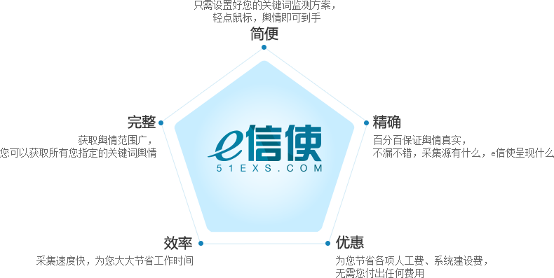

您成功注册，即可使用e信使舆情产品，并赠送阁下三个永久免费的信息监测方案，信息情报专家，从这里启航。
如您需要定制特别的信息监测服务，欢迎与我们联系，我们将全方位为您服务。

情报监测
可以自定义创建一个清晰有序的情报监测体系，全面覆盖危机舆情、广告传播、新闻监测、公关传播、行业环境、竞争对手、潜在进入者、互补品，及产业上下游等情报信息。

资讯捕获
通过e信使舆情产品，可以轻松监测互联网和主流媒体的各类资讯，能够为企业和公关市场人员提供最相关，及时并完整的行业、竞争者相关信息，帮助客户将核心精力集中于战略信息的分析和使用上。

舆情预警
支持邮件、短信等多样化提醒方式，及时掌握已知需要重点关注的舆情和未知的敏感舆情。

决策分析
针对重点人物、群体、社交关系、事件等进行深入分析，确保信息的价值被充分挖掘、分析和使用。
产品特性
